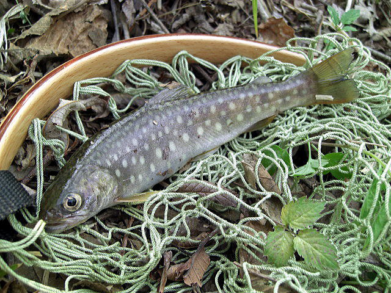
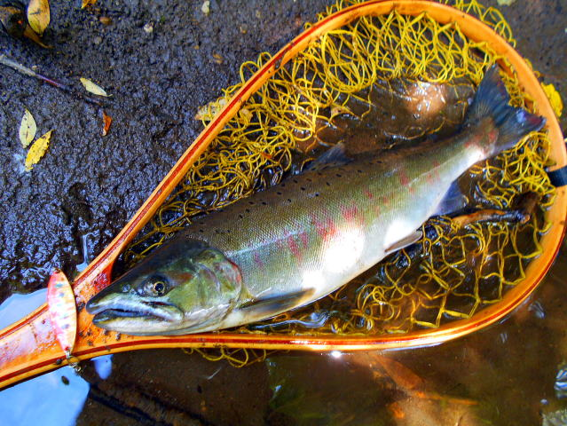
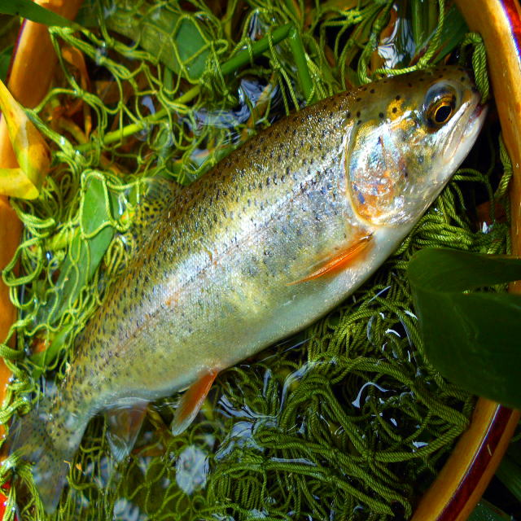
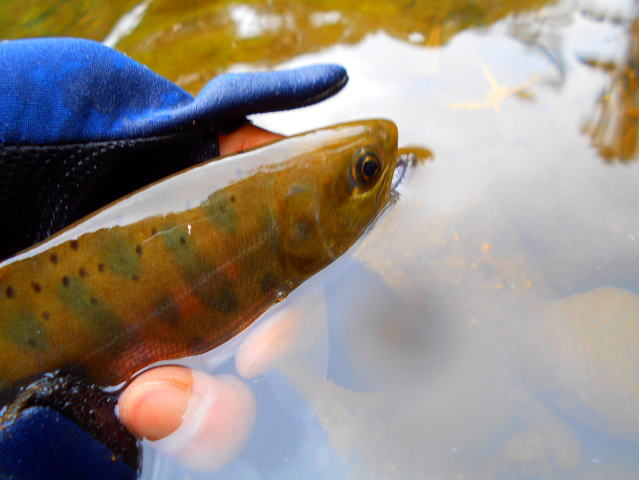
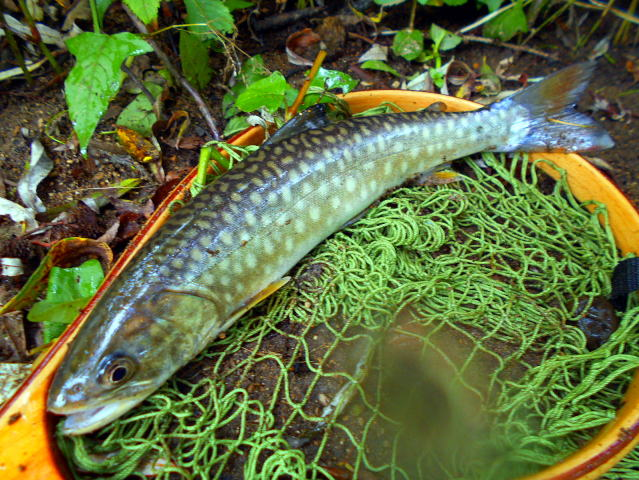
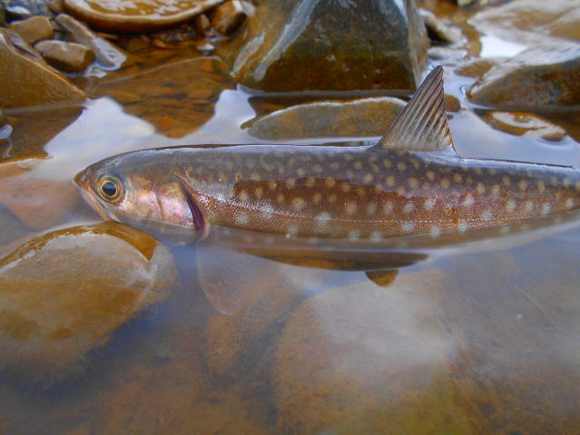

| ２０１６年１月３日 雨鱒４１センチ。ミノーＤＥＮＳ５センチ７g KHR NHNMTは人が多かったが坊主 （KHR HSOOKA 上流側） |
| ２０１６年１月１６日 STR 雪はあるが問題なし。風もなく快適。 １３時移動開始で１３時半開始。１時間程行う。当日は１匹のみ |
| ２０１６年１月１６日 STR 雨鱒３７センチSTR （１） ミノー月虫66激沈11g |
| ２０１６年２月６日 阿寒湖ワカサギ釣り93匹（６時間） 写真は雨鱒２４センチ |
| ２０１６年２月１３日 STR、KHR NHNMT坊主のため第一埠頭に移動 |
| ２０１６年２月１３日 第一埠頭 海アメ３６センチ ミノー月虫66激沈11g |
 |
| ２０１６年３月２１日 MHRR 虹鱒 餌釣り |
| ２０１６年４月９日 CHR TNTK下 どちゃ濁り |
| ２０１６年４月９日 CHR TNTK下 雨鱒３０センチ 月虫66激沈11g |
| ２０１６年４月１０日 CHR TNTK下 どちゃ濁り |
| ２０１６年４月１０日 CHR TNTK下 雨鱒５２センチ(1) RaPaLaCD7 |
| ２０１６年４月１０日 SHORDM開いてない。雪があり、車も入れない。 |
| ２０１６年４月１０日SNKSTKR魚いない。餌でも釣れない。 |
| ２０１６年４月１６日 CHR TNTK下 濁りあり |
| ２０１６年４月１６日 CHR TNTK下 雨鱒４４センチ RaPaLaCD7 |
| ２０１６年４月１６日 NNSBTSR |
| ２０１６年４月１６日 NNSBTSR 山女 DEVELOP-S 3g |
| ２０１６年４月１６日 MSTRGNGN |
| ２０１６年４月１６日 MSTRGNGN 山女 DEVELOP-S 3g |
| ２０１６年４月１８日KSR KNU 雨鱒 53センチ 月虫66激沈11g |
 |
| ２０１６年４月２３日 KSR桜鱒上がり混む。大き目のライズあり。 |
| ２０１６年４月２３日 NNSBTSR 山女 DEVELOP-G 3g |
| ２０１６年４月２３日 MSTRGNGN 岩魚 DEVELOP-S 3g |
| ２０１６年４月２３日 MSTRGNGN 橋から左に歩く。毎年より雪溶けが早かったためこの時期かもしれない |
| ２０１６年４月２４日KSR 雨鱒 DCON 桜鱒釣れない |
| ２０１６年４月２４日KSR 雨鱒 RaPaLaCD7 桜鱒釣れない |
| ２０１６年４月３０日 CHR TNTK 対岸 |
| ２０１６年４月３０日虹鱒２９センチ SHOR_DM２本目橋の車止 |
| ２０１６年５月１日KSR 桜鱒バラス MSTR 山女 DEVELOP-S 3g |
| ２０１６年５月２日KSR KNU下 キュウリ38センチ。当日キュウリのみ５匹 キュウリは５月連休に川を上がる。小さめのルアーでも釣れる |
 |
| ２０１６年５月３日虹鱒 SHOR_DM２本目橋の車止 |
| ２０１６年５月３日虹鱒 SHOR_DM２本目橋の車止 |
| ２０１６年５月３日虹鱒 SHOR_DM_ヘアピン奥インレット 3匹 |
| 虹鱒３８センチ BRETTON 5g赤金 |
 |
| ２０１６年５月１４日虹鱒 SHOR_DM_ヘアピン奥インレット 1時間で１２匹 活性が上がる |
| 虹鱒３０センチ |
| 虹鱒２８センチ |
 |
| 虹鱒２８センチ |
| 虹鱒２８センチ |
| ２０１６年５月１４日雨鱒 AKN下流 アカハラ、キュウリが釣れる |
| ２０１６年５月１４日SHOR_DM車止～ヘアピンの間でこごみが採れる。 MSTRGNGNで行者にんにくが太い状態でかなり採れる。 |
| ２０１６年５月１５日 MSTRGNGN 瀬に入り始める・１時間で７匹程度（山女と岩魚） |
| ２０１６年５月１８日虹鱒 SHOR_DM_ヘアピン奥インレット 1時間で３匹 あまり釣れない |
|  |
| ２０１６年５月２１日 OSBT 岩魚 ２０分限定のため１匹 |
| ２０１６年５月２８日虹鱒 SHOR_DM_ヘアピン奥インレット ２時間で１５匹（BRETTON 5g赤金） |
| ２０１６年５月２８日虹鱒４１センチ SHORDM下大滝 この他にアカハラが釣れる |
| ２０１６年５月２８日虹鱒２７センチ SHORDM上の川本流（当日４匹） CRUSADER 2.5g |
| ２０１６年５月２８日虹鱒２５センチ SHOR_DM_ヘアピン奥インレット（当日30分で４匹）（BRETTON 5g赤金） |
| ２０１６年５月２８日虹鱒２７センチ SHOR_DM_ヘアピン奥インレット（当日60分で８匹）（BRETTON 5g赤金、ルアーマン3g赤金） |
| ２０１６年６月５日 MSTRSR １時間で１２匹 クルセイダー２．５ｇ |
| 岩魚２０センチ |
| ２０１６年６月１１日虹鱒３０センチ SHOR_DM_ヘアピン奥インレット（当日120分で25匹）（BRETTON 5g赤金） |
| ２０１６年６月１２日岩魚 NNSBT（当日40分で8匹） |
| ２０１６年６月１８日虹鱒３０センチ SHOR_DM２本目橋の車止（当日40分で3匹）（BRETTON 5g赤金） |
| ２０１６年６月１９日虹鱒３6センチ KSRKOOSTB インレット右のかけあがり4時半（チヌーク10g） |
 |
| ２０１６年７月２日桜鱒４８センチ SIBTNS 当日これ以外山女のみ（DEBELOP 7ｇシルバー） |
| ２０１６年７月２日 TWDIR 岩魚１匹のみ |
| ２０１６年７月３日虹鱒３５センチ SHOR_DM_ヘアピン奥インレット（当日60分で1匹）（BRETTON 5g赤金）雨の増水でかなりの濁りあり |
| ２０１６年７月３日岩魚 MHRR（当日30分で3匹）雨の増水でかなりの濁りあり |
| ２０１６年７月９日桜鱒４２センチ SIBTNS 当日桜鱒２匹、山女１匹のみ（DEBELOP 10ｇゴールド） |
|  |
| ２０１６年７月９日桜鱒３９センチ SIBTNS 当日桜鱒２匹、山女１匹のみ（DEBELOP 10ｇゴールド） |
| ２０１６年７月１０日山女２２センチ BKNB |
|  |
| ２０１６年７月１６日 虹鱒２４センチ SRB 当日虹鱒３匹 |
| ２０１６年７月１７日 山女 SIBTNS 当日山女２匹 桜鱒０ |
| ２０１６年７月２３日 岩魚 MSTR 当日7匹 |
| ２０１６年７月３１日虹鱒３４センチ SHOR_DM_ヘアピン（当日２時間半で20匹）（BRETTON 5g赤） |
| 虹鱒３７センチ （ルアーマン７g赤金） |
| ２０１６年８月６日虹鱒２７センチ AKSKSBE（当2匹）（BRETTON 5g赤） |
 |
| 虹鱒２４センチ |
| ２０１６年８月６日虹鱒２４センチ SHOR_DM_白樺（当5匹）（BRETTON 5g赤） |
| ２０１６年８月１１日虹鱒２４センチ SHOR_DM_ヘアピン（当日２時間半で22匹）（ルアーマン7g赤金） |
 |
| 虹鱒３２センチ |
| 虹鱒３６センチ |
| ２０１６年８月１２日 NNSBT274（当日１時間半で10匹） |
| 山女２２センチ |
|  |
|  |
| 雨鱒27センチ |
| ２０１６年８月１２日 NNSBTPON（当日30分で5匹） |
| ２０１６年８月１３日 HRRGO（当日2時間で16匹） |
| ２０１６年９月１０日 NNSBTSR 桜鱒４５センチ（１） この日も増水酷く、ここでも３倍の推量があり、４日匹のみ。 |
| 桜鱒４５センチ（2） |
| ２０１６年９月１７日 HRRGO 岩魚、山女15匹 知り合いは４１センチの上り雨鱒１匹上げる。 |
| ２０１６年９月１７日 CHR TNTK下 雨鱒６匹 最大３５センチ |
 |
| ２０１６年９月１９日 CHR 青橋 雨鱒22匹 最大３９センチ（アベレージ27センチ） DEVEROP金 10g |
 |
| ２０１６年９月２２日 CHR 神社 雨鱒12匹 最大３５センチ DEVEROP金 7g |
| ３１センチ |
| ２０１６年９月２４日 CHR 青橋 雨鱒15匹 最大４０センチ（アベレージ27センチ） DEVEROP金 10g |
| ２０１６年９月２８日 CHR 青橋 雨鱒4匹 25センチ程度。DEVEROP金 10g |
|  |
| ２０１６年１０月９日 CHR TNTK下 雨鱒5匹 25～30センチ以下。DEVEROP赤金 10g 7g、BRETTON 5g赤金。 |
| ２０１６年１０月９日 NKC １時間半５匹 岩魚 山女、虹鱒 DEVEROP赤金 5g 3g |
| ２０１６年１０月９日 HRRGO １時間１匹 雨DEVEROP金 7g |